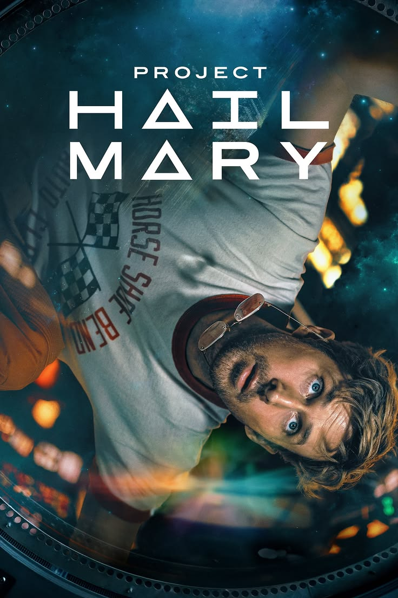

Science Fiction
2026
156 minutes
Phil Lord & Christopher Miller
A science fiction adventure following Ryland Grace, a former science teacher who awakens alone aboard a spacecraft with no memory of his mission. As his memories return, he realizes he must solve an interstellar mystery to save humanity from an extinction-level threat—with unexpected help from an unlikely alien ally.